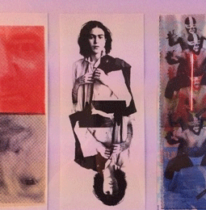

Créature sans âge, c'est sous l'énigmatique pseudonyme Lonny Montem que Louise Lhermitte produit sa folk raffinée et douillette. Son deuxième disque intitulé Tara, sorti le mois dernier,

une tartine avec jeff ross
Infatigable colleur, découpeur, peintre, Jess Ross parcourt le monde de l'art à la recherche non pas de la nouveauté, mais de l'authenticité. Comme les chats on dirait qu'il a eu neuf vies
One of three columns
provins retour vers le futur
Des ripailles alléchantes, des costumes d'époque, des cornes de brume... Ce week-end Provins accueille la 34ème édition de sa fiesta annuelle des Médiévales.
canicule / la tête froide
Depuis quelques jours nous suons, le regard vide, le sorbet à la main, tels des zombies en sandalettes. Ruisselants, nous nous sommes résolus à ressortir nos fringues les moins glorieuses du placard.